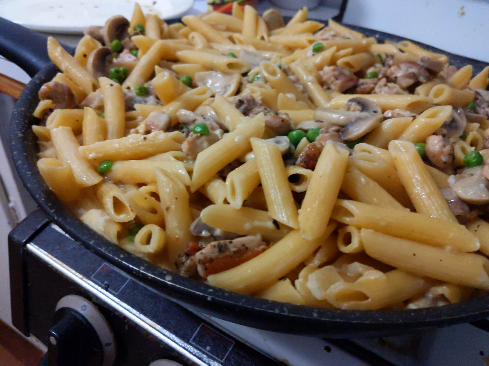

Amazing creamy chicken mushroom pasta that Ziv invented
Go Back

Amazing creamy chicken mushroom pasta that Ziv invented
This recipe for Creamy Chicken Mushroom Pasta is a hearty and flavorful dish that is perfect for a cozy weeknight meal. The recipe calls for boneless and skinless chicken thighs that are seasoned with dried basil, salt, and pepper, and then pan-fried in olive oil until golden brown. The chicken is then set aside while a delicious sauce is made with sautéed onions, garlic, and sliced mushrooms, and simmered in chicken broth and dry white wine. The sauce is then thickened and made creamy with the addition of evaporated milk and regular milk. The cooked penne pasta is added to the sauce, along with the cooked chicken, and the dish is topped with fresh grated Parmesan cheese and peas for a touch of color and sweetness.
This Creamy Chicken Mushroom Pasta is a comforting and filling dish that is sure to satisfy any appetite. It is perfect for a family dinner or for entertaining guests, as it is easy to make and can be prepared ahead of time. The combination of savory chicken, earthy mushrooms, and creamy pasta makes for a delicious and well-rounded meal that everyone will enjoy.
Ingredients
The way
- Season chicken thighs with dried basil, salt and pepper.
- Heat 2 teaspoons of oil in a large saucepan or pot over medium-high heat. Add the chicken thighs and sear on both sides until golden brown, cooked through and no longer pink. Remove and set aside.
- Add the remaining oil to the pot. Fry the onion and garlic until the onion becomes transparent, stirring occasionally (about 2 minutes).
- Pour in 1/3 cup of Wine (or chicken broth) and allow to simmer for 5 minutes, or until beginning to reduce down.
- Add the mushrooms and cook for a further 3 minutes, while stirring occasionally.
- Add 1L broth, 1/3 cup milk, 375ml evaporated milk, salt and pepper, and bring to a gentle simmer.
- Add the pasta and simmer until pasta is al dente, about 15 minutes, while stirring occasionally.
- While the pasta is cooking, slice the chicken into bite sized pieces.
- Stir in the parmesan cheese until it melts through the sauce and *add peas*.
- Remove from heat and allow to sit for 5 minutes to allow the sauce to thicken.
- Put in the chicken strips and stir through the pasta.
- BONUS: Garnish with fresh parsley and extra parmesan, if desired